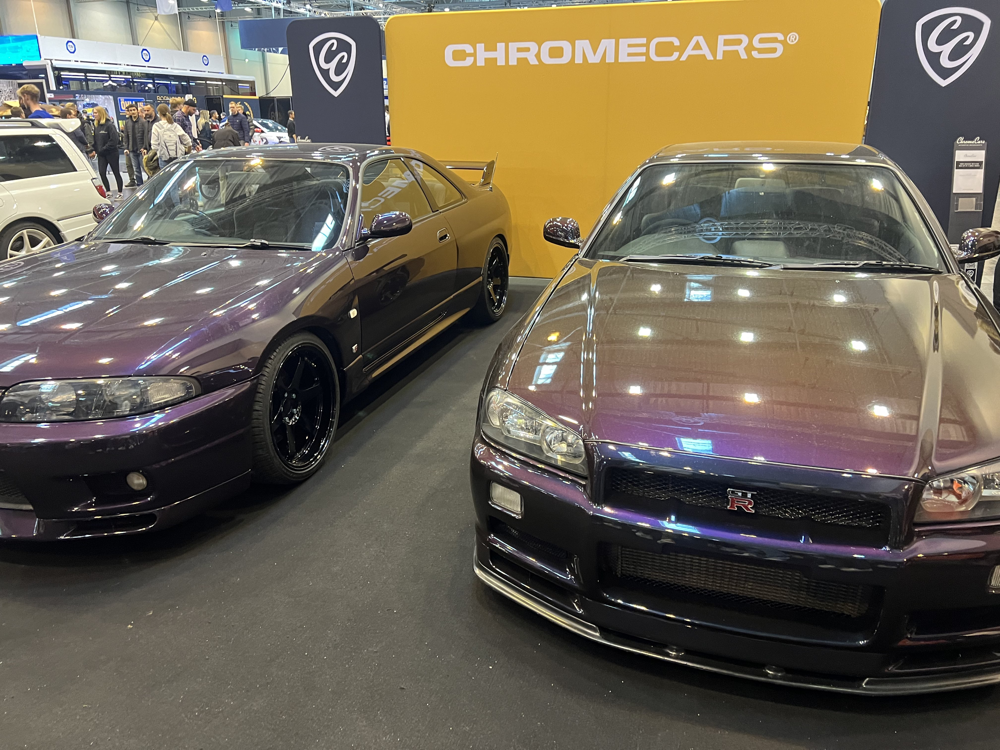
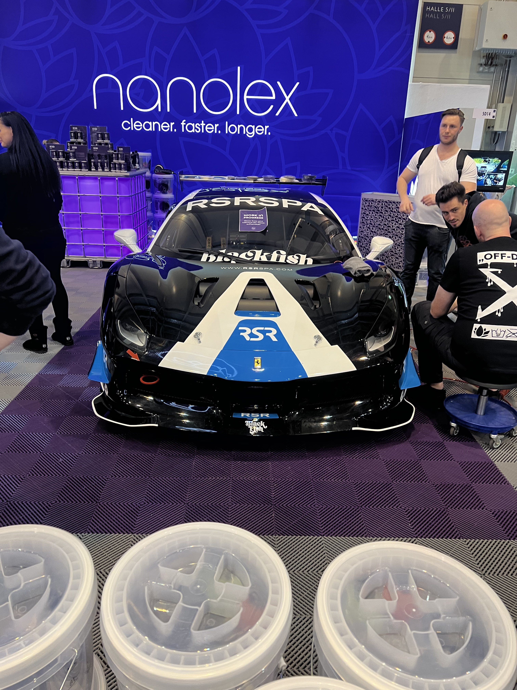
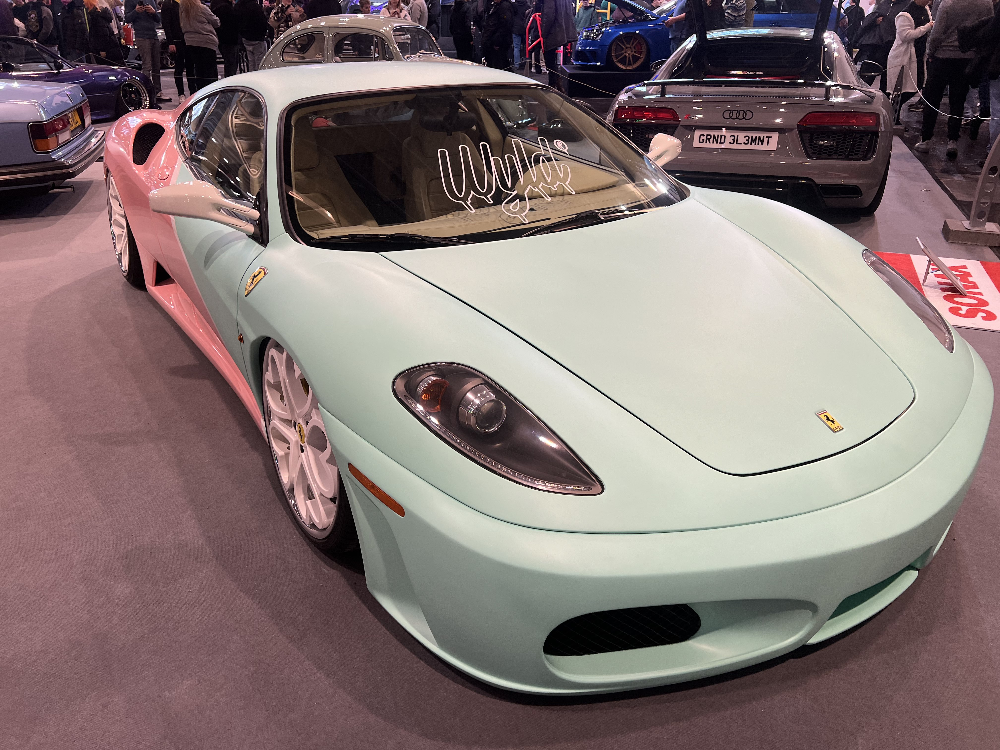
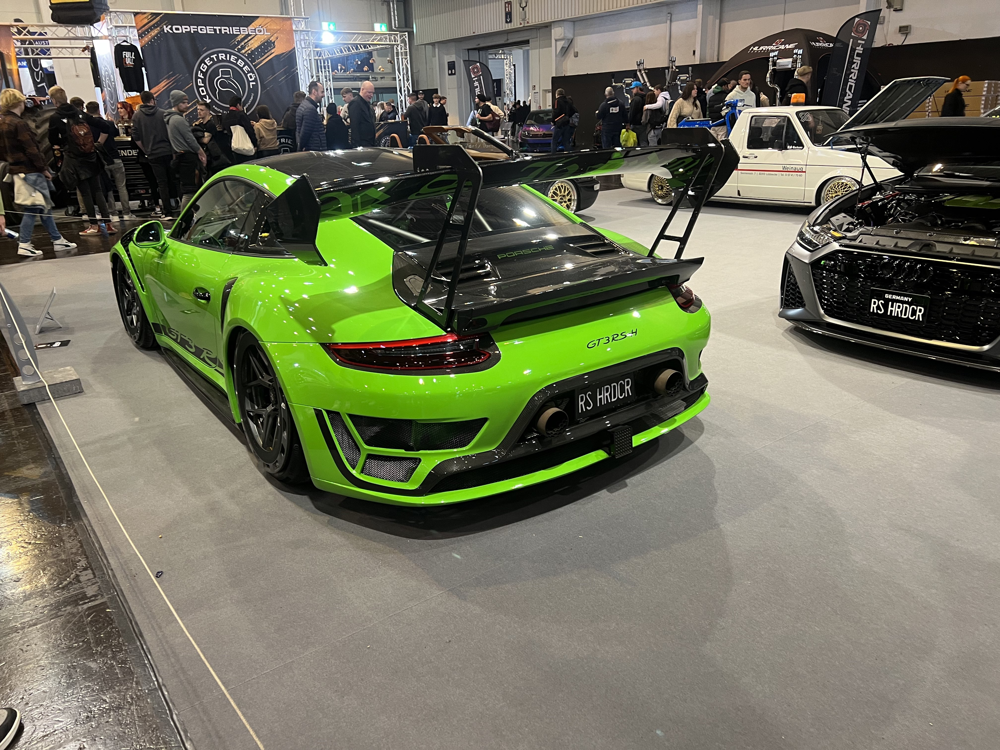
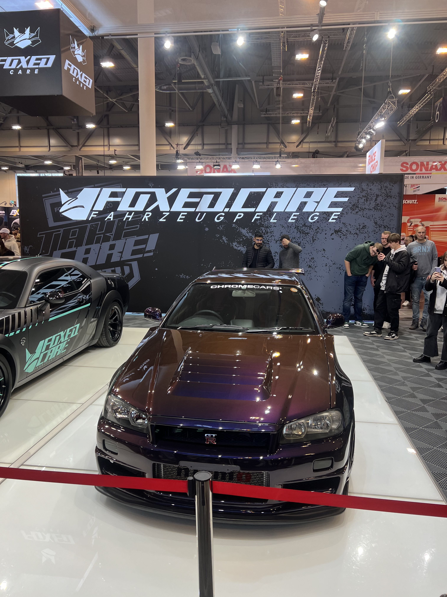
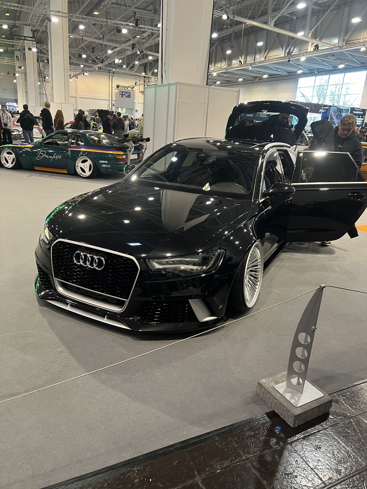
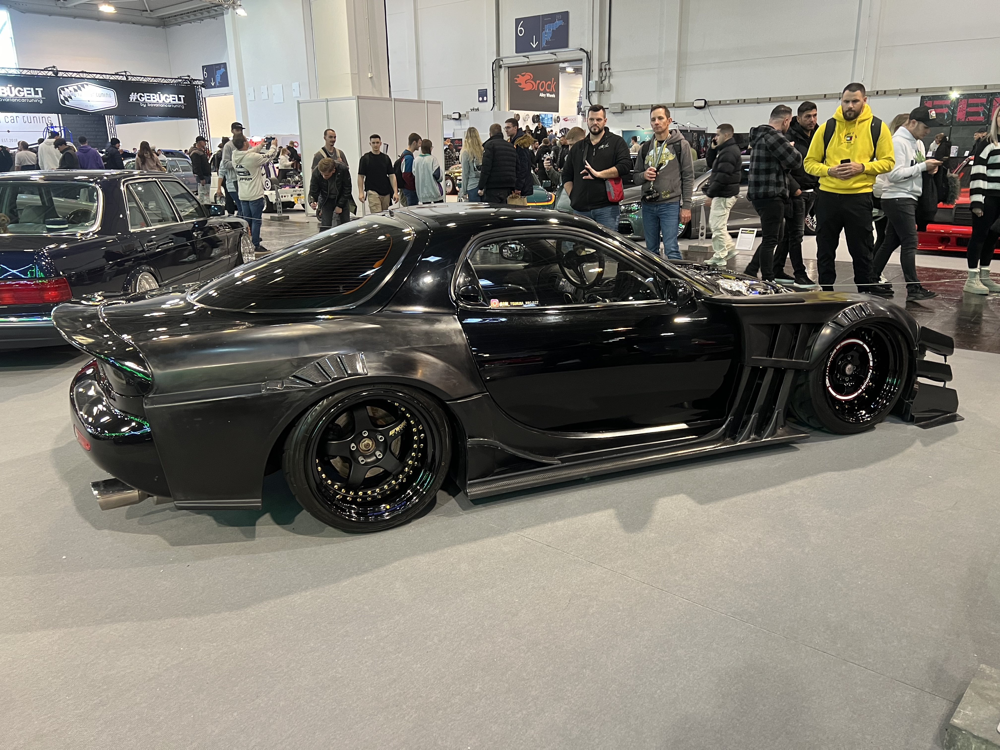

Je suis une personne aux intérêts variés, où chaque passion occupe une place importante dans ma vie. Les jeux vidéo me permettent de m'évader dans des univers fascinants et de développer des compétences stratégiques et créatives. La programmation est un autre domaine qui m’enthousiasme profondément; j'aime créer des solutions innovantes et relever des défis techniques.
Cependant, c'est dans le monde des voitures que ma passion est la plus vive. Les voitures ne sont pas seulement des moyens de transport pour moi, mais des œuvres d'art en mouvement. J'apprécie particulièrement les car meets, ces rassemblements de passionnés où les voitures sont au centre de l'attention. C’est un véritable plaisir de découvrir des modèles rares, d'échanger des idées avec d'autres amateurs et de discuter des dernières tendances en matière de design et de performance. Les car meets offrent une opportunité unique de partager et de célébrer notre passion commune pour l'automobile.
Les sports complètent mon tableau d’intérêts, offrant une échappatoire dynamique et une façon de maintenir un équilibre sain. J'apprécie l'énergie et l'esprit d'équipe que les sports apportent, renforçant ainsi mon engagement dans tous mes centres d'intérêt.






Mes coordonnées
Ville de
Blainville
Quebec, Canada
J7B 1S6
Mes Liens